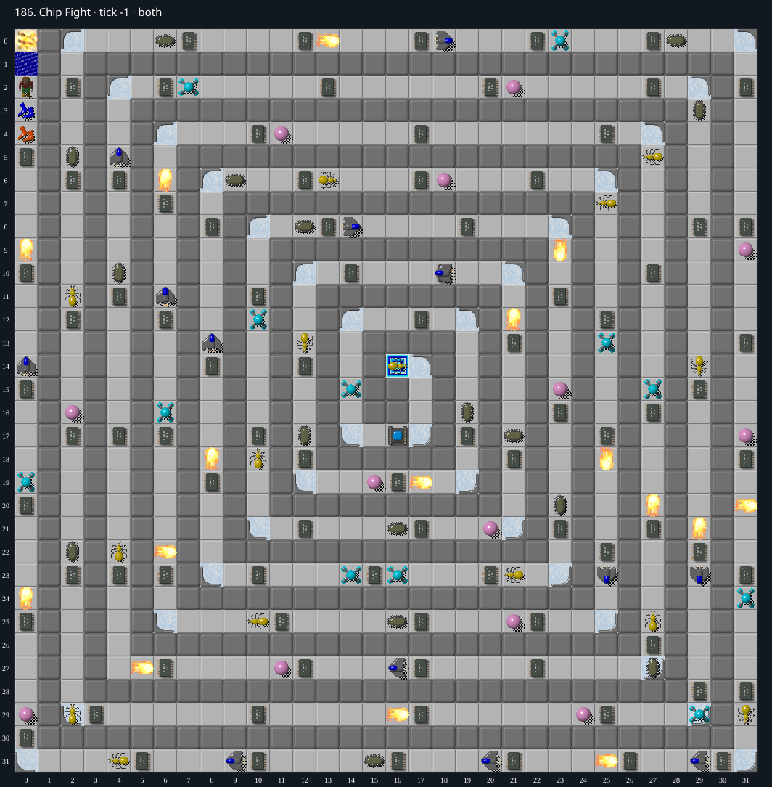

Jacques · Original Tile World MS
186. Chip Fight
Impossibility argumentAn indestructible horizontal ball blocks the single corridor before a mandatory chip.
92 chips required · No time limit
Why completion is impossible
- Ignoring movable objects and chips, the non-Wall cells form a single 543-cell path from Fire (0, 0) through Chip start (0, 2) to Exit (16, 14). There is no second route, teleport, clone machine, or movable block.
- The ball starts at (11, 27), facing east, immediately west of required chip (12, 27). This chip is the 263 rd position after the fire end of the corridor; the player approaches from the west. Before that chip can be collected, it blocks all monster entry from the west.
- At the west turn (4, 27) the tile is ordinary Empty, not ice; (3, 27) is permanent Wall. Until chip (12, 27) is collected, this ball can therefore only move horizontally within x 4..11 on row 27. A ball chooses forward or reverse only; no tile in that interval redirects it north/south.
- The interval has no water, fire, bombs, or other means to destroy the ball. Other monsters cannot destroy it, and collision/blocking can only reverse its horizontal direction.
- Chip and the surviving ball cannot pass each other along a one-cell-wide path without a lethal collision. Chip initially precedes the ball, whereas chip (12, 27) and the sole exit lie after it. Thus Chip cannot collect that chip or reach the exit. This ordering invariant holds for all timing and random seeds.
- A constructive exact-runtime experiment cleared 45 earlier chips by collecting each next chip and retreating to the fire/water disposal cells. It reached this specific ball obstruction. Failure of later timing probes is not used as proof.
Inspect both layers
The main map shows the initial runtime state. Switch to the buried layer to inspect hidden terrain and items. Hover coordinates are also available in the downloadable SVG.


Recorded checks and attempts
- DAT two-layer inventory: Exact DAT metadata/layers decoded; initial production runtime loaded and rendered with repository sprites.
- derived strategy executed in exact runtime: Both hazard boots acquired; 45 chips collected; 47 remain at tick 43444. Ball confinement at row 27 identified.256 one-tick departure variants then failed, but impossibility rests on invariant, not search.
Scope and limitations
- Ordinary legal MS play, with no cheats or edits.
Evidence
- Structured report
- web/src/ruleset-ms/impl/builtinLevelRegistration.ts
- legacy_c/mslogic.c:1002-1011 (bounded cardinal movement)
- legacy_c/mslogic.c:1034-1042 (socket/key requirements)
- legacy_c/mslogic.c:1616-1736 (arrival/terrain effects)
- legacy_c/mslogic.c:1825-1832 (exit completion)
- web/src/ruleset-ms/impl/chipMovement.ts:104-108 (TypeScript completion)
- legacy_c/mslogic.c:1200-1203 (Ball tries only forward/back)
- legacy_c/mslogic.c:412-425 (only ice corners redirect the ball)
- legacy_c/mslogic.c:1070-1113 (monster occupancy and collision)